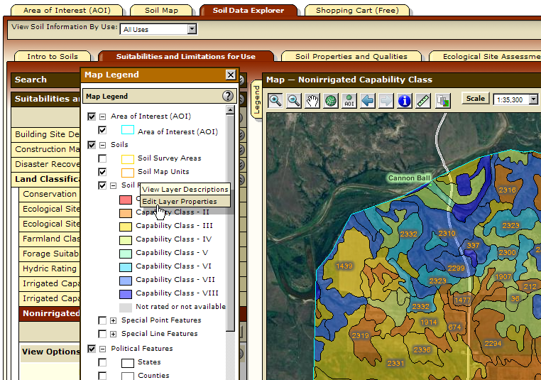
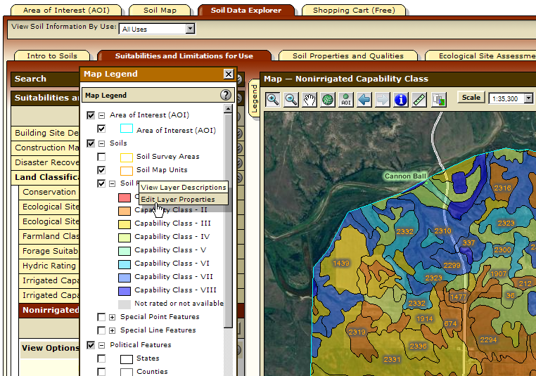
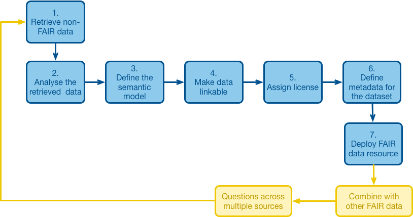

Introduction to Ag Informatics
Module 4, Lecture 1Ankita Raturi, ankita@purdue.edu
Fall 2021
Outline for Today
- Data modeling
- Managing sensitive data
- The open data ecosystem
A Data Lifecycle

Data Modeling
Decide what needs to be represented!
Determine the correct data type for different kinds of data.
Identify the right data structure to pool together related items.
Develop the right process to manage your data as a whole.
Example: Cover Crop Data
 



Spreadsheets / CSVs

Metadata & Documentation
Data Dictionary:

Data / Code Documentation Tools
https://readthedocs.org/
JSON
"Serialize" a data model.
[{
"Cover Crop Name": "Barley, Spring",
"Scientific Name": "Hordeum vulgare",
"Drought Tolerance": 4,
"Shade Tolerance": 2,
"Flood Tolerance": 2,
"Low Fertility Tolerance": 4,
"Salinity Tolerance": 3,
"Winter Survival": ["Seldom"],
"Active Growth Period": ["Spring", "Summer"],
"Duration": ["Annual"],
"Shape & Orientation": ["Erect"],
"Notes: Basic Agronomics": "Dry matter highly dependent on planting and termination date and precipitation....",
}]
The Cover Crop Data in Action
Built a Javascript-based web app.
Uses the airtable API (where we have spreadsheets) to pull live data (still being curated).
Data is restructured and stored as JSON files.
To be continued....
Structuring your data: Python
- Data types: int, float, String, etc.
- Data structures:
- Lists (array): [1, 2, 3, 4, 5]
- Tuples: ([1, 2, 3], 55, "what?")
- Dictionaries: {'key': value, 'bobby': 42, 'noddy': 54}
- Pandas' DataFrames.
- Object-oriented models in Python and
data models in Django using Classes (as prev. discussed).
Databases
Relational (SQL)
- All records have a unique identified, a column in the table deemed the PRIMARY KEY
- Tables are linked based on a lookup "column", known as a FOREIGN KEY
- Three relationship types:
- one-one: one book can have one ISBN (id number)
- one-many: one book can be borrowed many times
- many-many: many books can be borrowed by many people
Databases
Non-Relational (NoSQL)

Key-Value e.g., redis. Document e.g., MongoDB. Columnar e.g., Apache Cassandra Graph e.g., Neo4J
Django + SQLite
Django + JSON
Create Django fixtures, that is, an "annotated" JSON file:
Bulk Load the data!
Sensitivity of Data
- Private: Some Farmer Data, Proprietary Data, Human Subjects Research Data
- Protected: Same as above, but can be released in certain ways (e.g., de-identified, aggregated, shared with certain people)
- Public: Publicly funded research data, "Generic" data e.g., general plant data, "utility" data e.g., weather, can also include protected data e.g., deidentified data.
Research Data Perspective
IU Data Management 2021, https://datamanagement.iu.edu/types-of-data/classifications.php

Slattery et al., 2021, https://www.trustinfood.com/wp-content/uploads/2021/05/Farmer-Perspectives-on-Data-2021.pdf
Practicing Trust with Data
Privacy
- Protect personal information
- Handle geolocation information with sensitivity
- Provide granular data access controls
Agency
- Come to early consensus on data ownership
- Provide situational control over data
- Empower stakeholder voices
Privacy
- Protect personal information
- Handle geolocation information with sensitivity
- Provide granular data access controls
Agency
- Come to early consensus on data ownership
- Provide situational control over data
- Empower stakeholder voices
Raturi et al., Forthcoming (2021), "Cultivating Trust in Technology-Mediated Sustainable Agricultural Research".
Cultivate Trust in your Process
Transparency
- Be inclusive of stakeholders in the process
- Provide feedback and clarity on the process
- Open source development of tools
- Open access to privacy-preserved data
Accountability
- Uphold the responsbility of protecting data and research stakeholder rights
- Provide traceability of action
- Provide feedback among stakeholders
Raturi et al., Forthcoming (2021), "Cultivating Trust in Technology-Mediated Sustainable Agricultural Research".
Precision Sustainable Agriculture
Managing access to cover crop research data from US farms.

Raturi et al., Forthcoming (2021), "Cultivating Trust in Technology-Mediated Sustainable Agricultural Research".
The Open Data Ecosystem
Publish data* on the web.
*with appropriate permissions/protections
https://purr.purdue.edu/sharedata
Re-usable Media/Writing/Courses!
https://creativecommons.org/share-your-work/
Open Source Software Code

https://tldrlegal.com/
FAIR DATA
Data FAIRification process
https://www.go-fair.org/fair-principles/fairification-process/
The future is linked data
Learn more about Big Data in Smart Farming
https://skyfarms.io/wp-content/uploads/2020/05/2-Accenture-Digital-Agriculture.pdf
Homework
Thursday's lecture is in-person and will be a replacement for lab.
Thurday's lab time is a FIELD TRIP TO ACRE. If you haven't already, let me know if you need transport.
https://github.com/ag-informatics/ag-informatics-course/tree/main/module4
- The quiz is due on Friday @ 5pm
https://purdue.brightspace.com
Questions?
License
- Attribution Recommendation: Introduction to Agricultural Informatics Course", Ankita Raturi, Purdue University, 2021. Available at https://github.com/ag-informatics/ag-informatics-course. Licensed by CC BY-NC-SA 4.0.

This course is licensed under a Creative Commons Attribution-NonCommercial-ShareAlike 4.0 International (CC BY-NC-SA 4.0) license. This is a human-readable summary of (and not a substitute for) the license. Official translations of this license are available in other languages.
You are free to:
- Share — copy and redistribute the material in any medium or format
- Adapt — remix, transform, and build upon the material
Under the following terms:
- Attribution — You must give appropriate credit, provide a link to the license, and indicate if changes were made. You may do so in any reasonable manner, but not in any way that suggests the licensor endorses you or your use.
- NonCommercial — You may not use the material for commercial purposes.
- ShareAlike — If you remix, transform, or build upon the material, you must distribute your contributions under the same license as the original.
- No additional restrictions — You may not apply legal terms or technological measures that legally restrict others from doing anything the license permits.